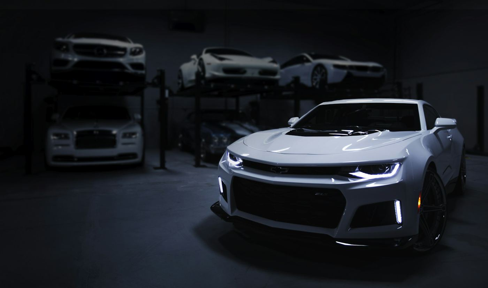

01 / MAINTAIN~2–3 HRS
RESET
A proper clean.
A fresh starting point.
- Gentle exterior wash
- Wheels, tires & exterior glass
- Interior vacuum & surface wipe
- Spray sealant finish
₱1,800 / SEDAN

AUTOMOTIVE DETAILING / CONCEPT STUDIO
PRECISION IS A PRACTICE.For the way light moves across a panel.
For the feeling when you step inside.
For the drive home.
01 / CHOOSE YOUR LEVEL
Start with what your car needs.
See what’s included before you decide.
A proper clean.
A fresh starting point.
Bring the clarity back.
Inside and out.
Correction first.
Protection that follows.
Illustrative packages and prices for this website concept. Vehicle condition would require inspection before a real quote.
02 / THE DIFFERENCE IS IN THE SURFACE
Clarity changes the way a surface catches light. Move the slider to explore a visual simulation of finish contrast.
Visual simulation using one stock photo and a filter. This is not a customer before-and-after result.
03 / THE ORDER MATTERS
Paint condition, existing coatings, and interior materials determine the right treatment.
Wash, decontaminate, mask, and test. A good finish starts before the polishing does.
Refine the finish, protect the surface, and review under different light.
04 / YOUR CAR. YOUR CALL.
A clear starting estimate, line by line.
Adjust your vehicle and treatment to see the difference.
05 / BEFORE YOU DECIDE
Reset suits routine upkeep. Refine adds a polishing stage for light surface defects. Shield adds correction and a coating. A real detailer should inspect paint thickness and condition before recommending correction.
No. Deep scratches, clear-coat damage, and some water etching may remain. Preserving the paint takes priority over chasing an unsafe correction.
This is an independent website concept. You can configure and download an estimate, but no appointment is created and no payment is collected.